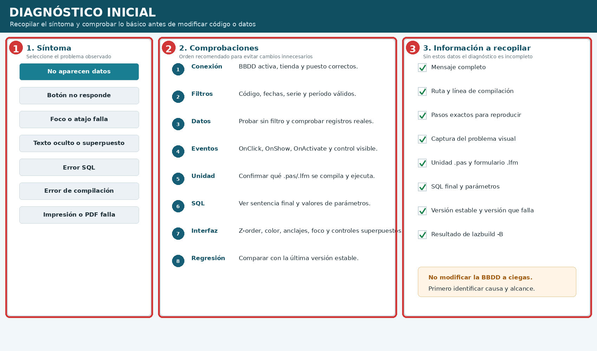
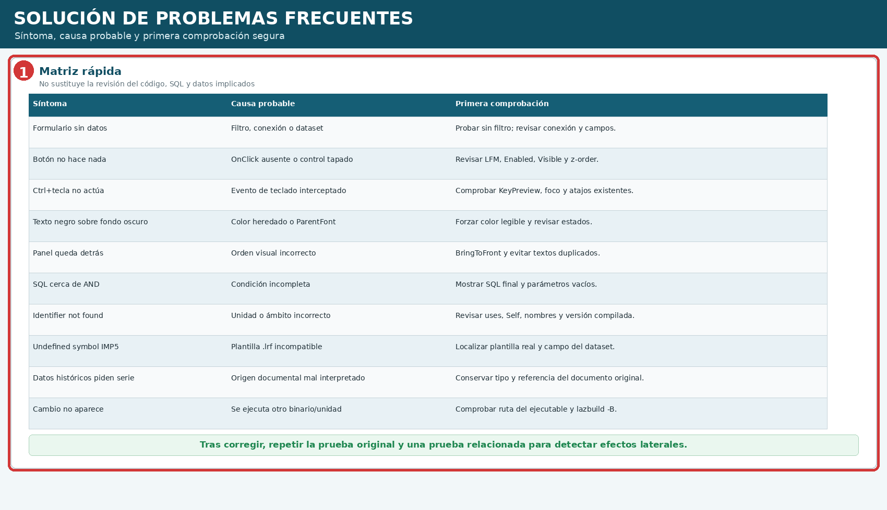

Solución de problemas
Primera edición 1.0 FINAL · Manual completo y auditado
12.1 Diagnóstico inicial #

| N.º | Zona | Uso |
|---|---|---|
| 1 | Síntoma | Definir qué no funciona y en qué pantalla. |
| 2 | Comprobaciones | Conexión, filtros, datos, eventos, unidad, SQL, interfaz y regresión. |
| 3 | Información | Mensaje, ruta, pasos, captura, unidades, SQL, versiones y compilación. |
- Reproduzca el problema con pasos concretos.
- Confirme el binario y unidad que se ejecutan.
- Pruebe con el mínimo de filtros.
- Lea el mensaje completo.
- Compare con la versión estable.
- Cambie una sola causa probable.
12.2 Matriz de problemas frecuentes #

12.3 El formulario abre, pero no muestra datos #
- Comprobar conexión y tienda.
- Revisar código, fechas, serie, puesto y período.
- Probar sin filtro.
- Confirmar registros reales.
- Verificar campos del dataset.
- Revisar eventos y procedimiento de consulta.
- Mostrar SQL final y parámetros.
12.4 Un botón no hace nada #
- OnClick asignado.
- Enabled, Visible y permisos.
- Controles superpuestos.
- Traza temporal.
- Unidad realmente ejecutada.
12.5 Problemas de foco y atajos #
- ActiveControl y TabOrder.
- KeyPreview y eventos de teclado.
- No dañar atajos F(x) existentes.
- ESC cancela primero paneles auxiliares.
- Probar en la pantalla exacta.
12.6 Texto oculto, negro, cortado o superpuesto #
- Forzar color legible.
- Revisar BringToFront/SendToBack.
- Evitar etiquetas duplicadas.
- Comprobar Anchors, Align y resoluciones.
- Mostrar avisos por encima y sin texto emborronado.
12.7 Errores SQL y datos históricos #
| Síntoma | Causa | Acción |
|---|---|---|
| Error cerca de AND | Condición incompleta. | Mostrar SQL y parámetros. |
| Sin datos | Filtro o campo equivocado. | Consulta mínima. |
| Histórico pide serie | Origen mal interpretado. | Conservar tipo y referencia. |
| Fields[n] incorrecto | Índice cambiado. | Preferir FieldByName. |
| Collation mix | Cotejamientos incompatibles. | Identificar columnas y normalizar con control. |
12.8 Compilación, impresión y plantillas #
| Mensaje | Interpretación | Comprobación |
|---|---|---|
| Identifier not found | Nombre, ámbito o uses. | Versión y objeto real. |
| Fields cannot appear after a method | Declaración mal situada. | Ordenar la clase. |
| Undefined symbol IMP5 | .lrf incompatible. | Plantilla y dataset reales. |
| Documentos.lrf inesperado | Ruta dinámica. | LoadFromFile y rutas efectivas. |
| Cambio no aparece | Otro binario/unidad. | Ruta y lazbuild -B. |
12.9 Información que debe recopilarse #
- Resultado esperado y real.
- Pasos para reproducir.
- Mensaje, ruta y línea.
- Captura visual.
- .pas y .lfm.
- SQL y parámetros.
- Versión estable y versión que falla.
- Resultado de lazbuild -B.
12.10 Lista final de diagnóstico #
- Problema reproducido.
- Binario y unidad confirmados.
- Conexión, tienda, puesto y filtros revisados.
- SQL o evento identificado.
- Comparación con versión estable.
- Una causa cambiada cada vez.
- Prueba original y relacionada superadas.
- Copia previa disponible cuando se tocaron datos.
- Cuadros, números y leyendas coinciden.